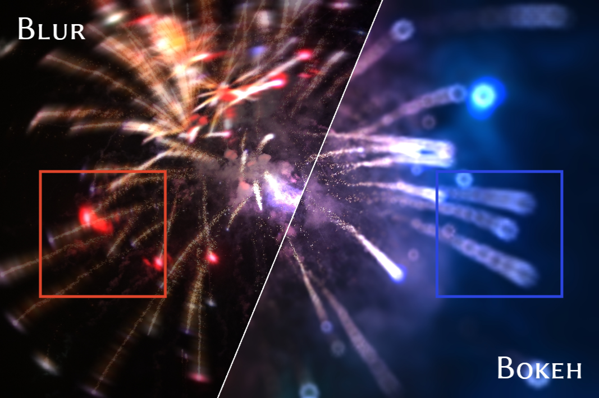

Zhe Cao
I am a second-year Master's student at the State Key Lab of CAD&CG, Zhejiang University. My current research focuses on computer graphics.
Research Interests
My research interests lie in computer graphics, with a current focus on efficient rendering, image processing, and real-time graphics algorithms.
News
- [2026] One paper accepted by SIGGRAPH 2026.
- [2026] One paper accepted by ICLR 2026.
- [2025] One paper accepted by SIGGRAPH Asia 2025 / ACM TOG.
Publications
* Equal contribution. † Corresponding author.